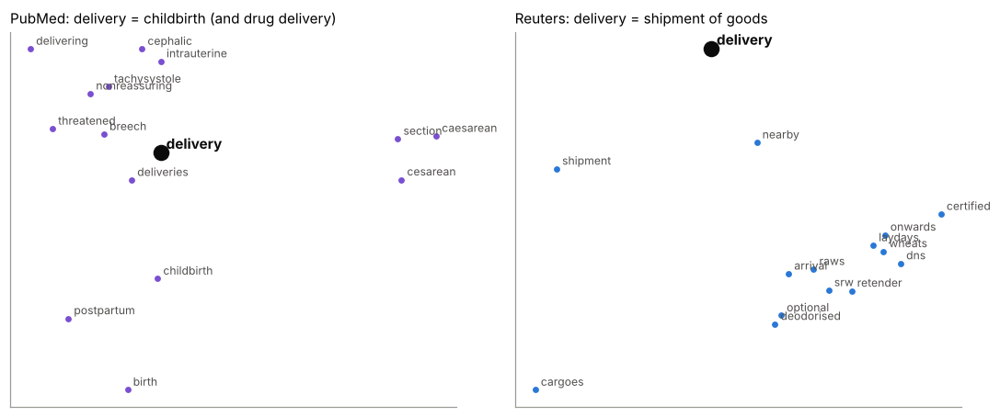
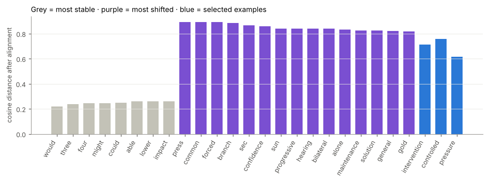
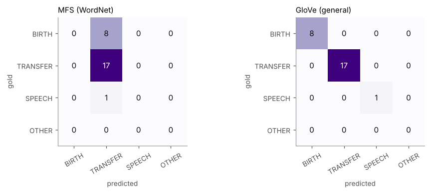
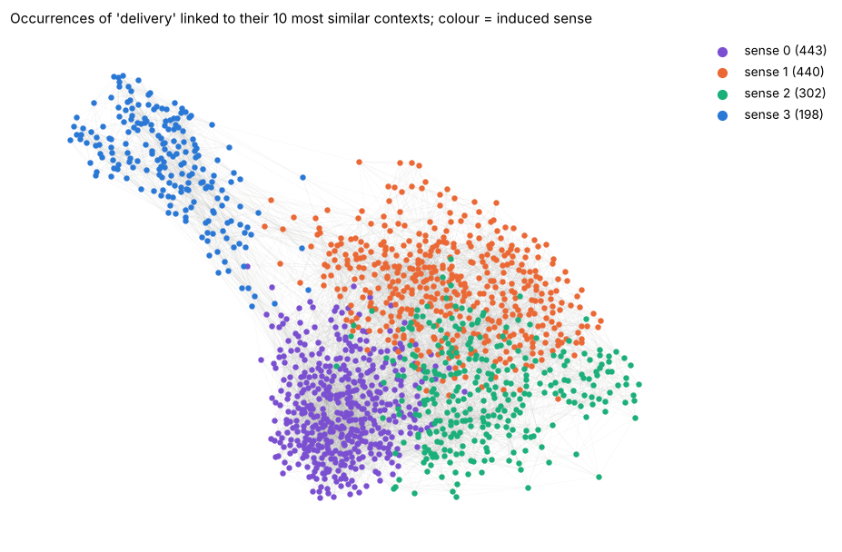
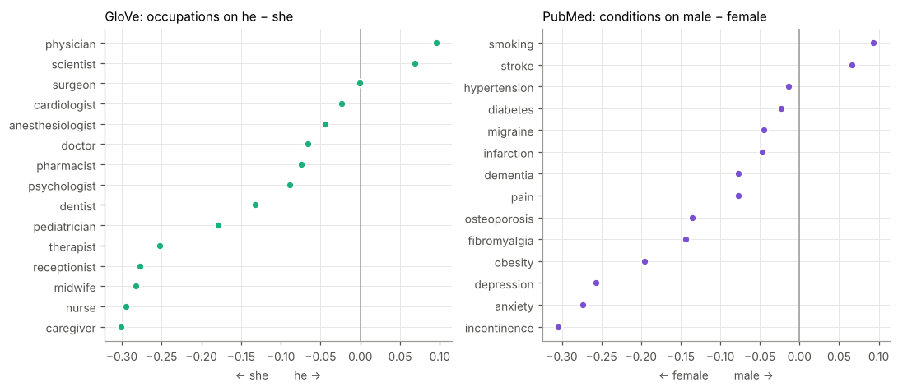

A hands-on tutorial on lexical and vector semantics. A computer reads 20,000 abstracts of clinical trials
(PubMed 20k RCT) and 10,788 Reuters news stories, learns word meanings from scratch, and finds out that
depression, delivery, pressure and MS mean different things in each world.
WordNet, TF-IDF, PPMI, word2vec, GloVe, WSD, entity linking, graphs, metrics and bias, in one notebook that runs on a free Colab CPU.
Nearest neighbours (cosine similarity) of the same word in three embedding spaces: word2vec trained on PubMed, word2vec trained on Reuters, and pre-trained GloVe (Wikipedia + news, 6 B tokens). Pick a word.
Every step starts with a predict before you run question and ends with a discussion.
The senses of depression, delivery and administration; synonyms, hypernyms, the meronyms of the heart.
LO1Context counts: cesarean, vaginal, preterm vs. wheat, tonnes, futures.
LO2A TF-IDF search engine over 20,000 abstracts, and why heart attack misses myocardial infarction; counts vs. PPMI.
LO3 · LO4Train skip-gram on each corpus in about two minutes; compare with GloVe; analogies (knee : arthroplasty :: hip : THA).
LO3 · LO6Align the two spaces (orthogonal Procrustes) and let the computer find confidence, hearing, terminal, branch.
LO4Six methods on 26 hand-labelled delivery sentences: birth, shipment or a manner of speaking?
LO5MS: multiple sclerosis, mass spectrometry or Morgan Stanley? Corpus priors, context, NIL and live Wikidata candidates.
Antonyms (positive ≈ negative), new drugs missing from GloVe, one vector per word, and bias.
LO6A word graph of trial topics, graph-based sense induction, purity/NMI/ARI, precision, recall and F1.
all

| method | Reuters (12) | PubMed (14) | why |
|---|---|---|---|
| Most frequent sense (WordNet) | 0.92 | 0.43 | WordNet's sense 1 is the commercial delivery: it never answers "birth" |
| Domain MFS (from the corpus embeddings) | 0.92 | 0.57 | the corpus tells us its dominant sense, without labels |
| NLTK Lesk | 0.83 | 0.36 | short glosses, accidental overlaps |
| Simplified Lesk | 0.92 | 0.43 | glosses plus examples, still few overlaps |
| Embeddings (GloVe, general) | 1.00 | 1.00 | large general corpus: good glosses and good contexts |
| Embeddings (domain word2vec) | 1.00 | 0.64 | domain vectors know the domain, not the dictionary glosses |


P(entity | MS) | multiple sclerosis | mass spectrometry | Morgan Stanley |
|---|---|---|---|
| in PubMed | 0.77 | 0.22 | 0.01 |
| in Reuters | 0.09 | 0.09 | 0.82 |
On 8 test mentions: prior only 4/8, dense context 5/8, dense context with a NIL check 7/8.

Click Open in Colab and choose Runtime → Run all (about 8–10 minutes). Or locally:
git clone https://github.com/matpato/SemShift.git && cd SemShift pip install -r requirements.txt jupyter lab notebooks/SemShift_biomedical.ipynb
| Data | Size | Source |
|---|---|---|
| PubMed 20k RCT (Dernoncourt & Lee, 2017) | 20,000 abstracts · 4.8 M tokens | GitHub |
| Reuters-21578 (ApteMod) | 10,788 docs · 1.3 M tokens | NLTK |
| WordNet 3.0 + Open Multilingual WordNet | 117k synsets | NLTK |
GloVe glove-wiki-gigaword-100 | 400k words · 128 MB | gensim-data |
| Wikidata | entity identifiers | wikidata.org |